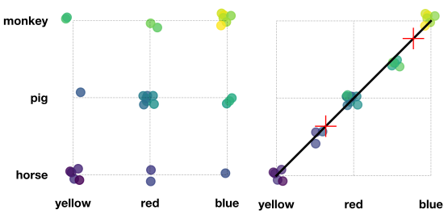
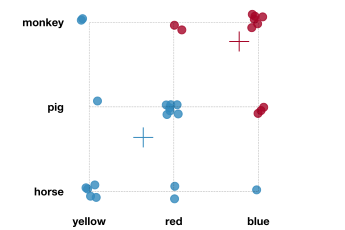
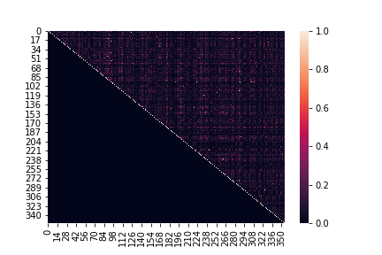
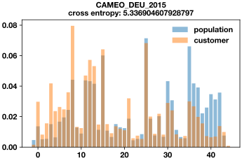
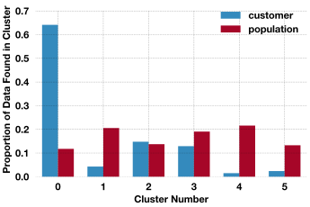

Arvato Financial Services, a mail-order sales company in Germany, has provided demographics data for the general population and their customers.
This project has two goals:
- Segment the data to define differences between the population and customer groups.
- Predict which individuals would respond positively to a marketing campaign.
Below, I'll detail the steps I took to analyze the data and present my final results. However, you can skip ahead to any section with following links.
- Initial Data Exploration
- Don't use PCA and k-Means on Categorical Data
- Identifying Key Features
- k-Modes Clustering
- Predictive Model: Pipeline and Model Tuning
- Results
Initial Data Exploration
The data is distributed across 4 files:
- Udacity_AZDIAS_052018.csv Demographics data for the general population of Germany; 891,211 persons (rows) x 366 features (columns)
- Udacity_CUSTOMERS_052018.csv Demographics data for customers of a mail-order company; 191,652 persons (rows) x 369 features (columns).
- Udacity_MAILOUT_052018_TRAIN.csv Demographics data for individuals who were targets of a marketing campaign; 42,982 persons (rows) x 367 (columns).
- Udacity_MAILOUT_052018_TEST.csv Demographics data for individuals who were targets of a marketing campaign; 42,833 persons (rows) x 366 (columns).
Each row of the demographics files represents a single person, but also includes information outside of individuals, including information about their household, building, and neighborhood.
The first two files are to be used for the segmentation task, then the second two file are for the prediction task.
Additionally, an excel file with information about the data features and possible values has been provided. Upon inspection it looks like this file contains information for most but not all of the features. I'll refer to this file simply as the "descriptions."
I'll begin by grabbing some standard imports and then importing the data.
import numpy as np
import pandas as pd
import matplotlib.pyplot as plt
import seaborn as sns
from sklearn.base import BaseEstimator, TransformerMixin
from sklearn.impute import SimpleImputer as Imputer
from sklearn.pipeline import Pipeline
import scipy.stats as ss
from sklearn.naive_bayes import MultinomialNB as NB
from sklearn.metrics import confusion_matrix, accuracy_score, roc_auc_score
azdias = pd.read_csv('./data/Udacity_AZDIAS_052018.csv', sep=';')
customers = pd.read_csv('./data/Udacity_CUSTOMERS_052018.csv', sep=';')
First, I'll look at the inferred datatypes.
azdias.info()
RangeIndex: 891221 entries, 0 to 891220 Columns: 366 entries, LNR to ALTERSKATEGORIE_GROB dtypes: float64(267), int64(93), object(6) memory usage: 2.4+ GB
Ok, most of the data is numeric. I'll take a look at the object data types first to see what they contain.
After digging through the descriptions and, where necessary, directly inspecting the column, here are the descriptions for the object data types and my initial recommended course of action:
- CAMEO_DEU_2015 detailed classification -- convert to categorical
- CAMEO_DEUG_2015 income group -- convert to ordinal (1 is upper class, 9 is urban working class, -1 is unknown)
- CAMEO_INTL_2015 international classification -- not described, contains nans and odd category 'XX', more investigation required
- D19_LETZTER_KAUF_BRANCHE not described, translation is "last purchase industry", looks like it is the titles for the other D19 columns
- EINGEFUEGT_AM not described, translation is "inserted on" -- these are dates, should convert to datetime and, for now, keep just the year
- OST_WEST_KZ flag indicating former east (O) or west (W) germany, unknown is -1. -- convert to categorical
- PRODUCT_GROUP (only present in CUSTOMER data) not described, contains three groups: FOOD, COSMETIC, COSMETIC AND FOOD -- convert to categorical
- CUSTOMER_GROUP (only present in CUSTOMER data) not described, contains either MULTI_BUYER or SINGLE_BUYER -- convert to categorical
I'll make a little class to convert the columns with object data types and structure it for later use in a pipeline. The PRODUCT_GROUP, ONLINE_PURCHASE, and CUSTOMER_GROUP columns will be dropped since these are not available in the population dataset.
class ObjectDtype(BaseEstimator, TransformerMixin):
def __init__(self, include='all'):
self.include = include
def fit(self, X, y=None):
return self
def transform(self, X):
if self.include == 'all':
columns = ['CAMEO_DEU_2015',
'D19_LETZTER_KAUF_BRANCHE', 'OST_WEST_KZ',
'PRODUCT_GROUP', 'CUSTOMER_GROUP', 'EINGEFUEGT_AM',
'CAMEO_DEUG_2015', 'CAMEO_INTL_2015']
else:
columns = self.include
for col in columns:
if col in ['CAMEO_DEU_2015', 'CAMEO_INTL_2015',
'D19_LETZTER_KAUF_BRANCHE', 'OST_WEST_KZ',
'CAMEO_DEUG_2015']:
X[col] = X[col].astype('category')
X[col] = X[col].cat.codes
if col == 'EINGEFUEGT_AM':
X[col] = pd.to_datetime(X[col], infer_datetime_format=True)
X[col] = X[col].dt.year
if col in ['PRODUCT_GROUP', 'CUSTOMER_GROUP'] and col in X.columns:
X = X.drop([col], axis=1)
if 'ONLINE_PURCHASE' in X.columns:
X = X.drop(['ONLINE_PURCHASE'], axis=1)
return X
Next, I'll check out the columns with integer datatypes to see if they should be categorical. If there are only a few unique values then it is probably safe (at this point anyway) to assume that the column represents categorical data that has already been encoded. I'll pay more attention to the fields with a large number of unique values.
Here are the integer-valued features with the most unique values.
print(azdias.select_dtypes(include=[np.int8, np.int64]).nunique().sort_values(ascending=False)[:5])
print(customers.select_dtypes(include=[np.int8, np.int64]).nunique().sort_values(ascending=False)[:5])
LNR 891221 GEBURTSJAHR 117 CAMEO_DEU_2015 46 CAMEO_INTL_2015 44 D19_LETZTER_KAUF_BRANCHE 36 dtype: int64 LNR 191652 GEBURTSJAHR 113 CAMEO_DEU_2015 46 PRAEGENDE_JUGENDJAHRE 16 D19_GESAMT_DATUM 10 dtype: int64
LNR is not in the descriptions. I'll take a closer look at its values and length.
print(azdias['LNR'].head(10))
print(len(azdias['LNR']))
0 910215 1 910220 2 910225 3 910226 4 910241 5 910244 6 910248 7 910261 8 645145 9 645153 Name: LNR, dtype: int64 891221
For LNR the number of unique entries is identical to the number of entries so it is likely an identification number. In fact, this is confirmed later when I submit the predictions to Kaggle becuase LNR is used to identify each prediction.
Moving on to the next many-valued feature; GEBURTSJAHR is the year of birth. Upon inspection we can see that there are quite of few entries with a value of zero.
print('Number of 0 entries for birth year:')
print('Population')
print(azdias['GEBURTSJAHR'].value_counts().sort_values(ascending=False)[[0]])
print('Customers')
print(customers['GEBURTSJAHR'].value_counts().sort_values(ascending=False)[[0]])
Number of 0 entries for birth year: Population 0 392318 Name: GEBURTSJAHR, dtype: int64 Customers 0 93024 Name: GEBURTSJAHR, dtype: int64
As seen above, there are 93024 enties in the customer data without a birth year. It will probably be a good idea to keep these either as zero or use an imputation strategy and append an additional column indicating if the birth year is known. I'll develop another class to drop the LNR column and provide an imputation method for the birth year.
class DropAndImputeBirthYear(BaseEstimator, TransformerMixin):
def __init__(self, drop=True, impute=None, add_column=True):
self.drop = drop
self.impute = impute
self.add_column = add_column
def fit(self, X, y=None):
if self.impute is not None:
self.imputer = Imputer(missing_values=0, strategy=self.impute)
self.imputer.fit(X[['GEBURTSJAHR']], y)
return self
def transform(self, X):
if self.add_column:
X['has_birth_year'] = (X['GEBURTSJAHR'] > 0).astype('category')
if self.impute is not None:
X['GEBURTSJAHR_imputed'] = self.imputer.transform(X[['GEBURTSJAHR']])
if self.drop:
X = X.drop(['LNR', 'GEBURTSJAHR'], axis=1)
return X
Now, I'll apply the classes to convert the object dtypes, drop unwanted columns, and impute the birth year.
data_pipe = Pipeline([('cat', ObjectDtype()),
('drop', DropAndImputeBirthYear(impute='median'))])
print('fitting datapipeline to population data...')
pop_transformed = data_pipe.fit_transform(azdias)
print('transforming customer data....')
cust_transformed = data_pipe.transform(customers)
fitting datapipeline to population data... transforming customer data....
Now, upon looking at the first few instances of the dataframe it's obvious that there are a lot of null values. I'll get a better estimate.
print('Percent of values missing per column:')
(cust_transformed.isna().sum().sort_values(ascending=False))[:10]/len(cust_transformed)
Percent of values missing per column: ALTER_KIND4 0.998769 ALTER_KIND3 0.993347 ALTER_KIND2 0.973389 ALTER_KIND1 0.938607 KK_KUNDENTYP 0.584064 EXTSEL992 0.444989 KBA05_SEG6 0.292092 KBA05_KW2 0.292092 KBA05_KW1 0.292092 KBA05_KRSZUL 0.292092 dtype: float64
As seen, there are many fields missing more than 30% of their values. However, this is still potentially an underestimate. You see, for many of the fields the descriptions file has an identifier for "unknown". While not having data may indicate something, there should not be a difference between data that is uknown because it is missing and data that is uknown because it is labelled as uknown. To account for this I'll parse the descriptions file to get the uknown identifier for each field if it's available. Then I can really estimate how much data is misssing.
description_filepath = './DIAS Attributes - Values 2017.xlsx'
desc = pd.read_excel(description_filepath, header=1)
def get_unknown_indicators(df):
unknown_map = {}
attrs = []
for _, row in df.iterrows():
att = row['Attribute']
if isinstance(att, str):
if att[-3:] == '_RZ':
att = att[:-3]
if att == 'CAMEO_DEUINTL_2015':
att = 'CAMEO_INTL_2015'
if att == 'D19_KK_KUNDENTYP':
att = 'KK_KUNDENTYP'
attrs.append(att)
val = row['Value']
meaning = str(row['Meaning']).split()
if 'unknown' in meaning:
unknown_map[attrs[-1]] = val
return attrs, unknown_map
Now, I can grab all of the uknown indicators. Additionally, I can see which features do not have descriptions and also which see which attributes are in the descriptions file but are not found in the data.
attrs, u_map = get_unknown_indicators(desc)
no_desc = set(cust_transformed.columns) - set(attrs)
print('columns in data without description')
print(no_desc)
print('')
print('descriptors without columns in the data')
print(set(attrs)-set(customers.columns))
columns in data without description
{'CJT_KATALOGNUTZER', 'SOHO_KZ', 'ANZ_STATISTISCHE_HAUSHALTE', 'ALTER_KIND2', 'D19_KONSUMTYP_MAX', 'VK_DISTANZ', 'ARBEIT', 'EINGEFUEGT_AM', 'RT_SCHNAEPPCHEN', 'D19_VERSI_OFFLINE_DATUM', 'EINGEZOGENAM_HH_JAHR', 'KBA13_HHZ', 'ALTERSKATEGORIE_FEIN', 'KBA13_ANTG4', 'KOMBIALTER', 'D19_BUCH_CD', 'D19_LETZTER_KAUF_BRANCHE', 'D19_VERSI_DATUM', 'DSL_FLAG', 'ALTER_KIND4', 'STRUKTURTYP', 'ALTER_KIND1', 'VHN', 'KBA13_ANTG3', 'GEMEINDETYP', 'CJT_TYP_1', 'D19_SOZIALES', 'KBA13_ANTG1', 'D19_TELKO_ONLINE_QUOTE_12', 'KBA13_ANTG2', 'FIRMENDICHTE', 'D19_VERSI_ONLINE_QUOTE_12', 'KBA13_KMH_210', 'CJT_TYP_2', 'RT_KEIN_ANREIZ', 'AKT_DAT_KL', 'KBA13_CCM_1401_2500', 'ANZ_KINDER', 'ALTER_KIND3', 'CJT_TYP_6', 'VHA', 'has_birth_year', 'UNGLEICHENN_FLAG', 'KONSUMZELLE', 'UMFELD_ALT', 'RT_UEBERGROESSE', 'GEBURTSJAHR_imputed', 'D19_VERSI_ONLINE_DATUM', 'VERDICHTUNGSRAUM', 'VK_ZG11', 'CJT_TYP_3', 'MOBI_RASTER', 'HH_DELTA_FLAG', 'VK_DHT4A', 'CJT_TYP_5', 'CJT_TYP_4', 'EXTSEL992', 'KBA13_GBZ', 'UMFELD_JUNG', 'KBA13_BAUMAX'}
descriptors without columns in the data
{'D19_BUCH', 'BIP_FLAG', 'GEOSCORE_KLS7', 'SOHO_FLAG', 'KBA13_CCM_1400_2500', 'WACHSTUMSGEBIET_NB', 'HAUSHALTSSTRUKTUR'}
The CJT_TYP_* columns are filled with values unless the CJT_GESAMTTYP entry is missing. Same for the RT_* columns. After inspection it looks like most of these are fine to keep (that is, their values are bounded by a small set of values).
Now, that I know the missing value flags I can fill these in and then drop columns/rows appropriately.
def func(x, vals):
if isinstance(vals, int):
if x==vals:
x = np.nan
else:
vals = [int(val) for val in vals.split(',')]
if x in vals:
x = np.nan
return x
def add_missing(df, mapper):
df = df.copy()
for k, v in mapper.items():
if (k=='BIP_FLAG' or k=='GEOSCORE_KLS7'
or k=='HAUSHALTSSTRUKTUR' or k=='KBA13_CCM_1400_2500'
or k=='SOHO_FLAG' or k=='WACHSTUMSGEBIET_NB'):
continue
df[k] = df[k].apply(func, vals=v)
return df
cc = cust_transformed.copy()
cc = add_missing(cc, u_map)
pp = pop_transformed.copy()
pp = add_missing(pp, u_map)
I'll define a little function to identify which columns (or rows) to keep if they are missing less than a user-specified percentage of data.
def num_missing(df, percent=30, which='col',
verbose=True, return_keep=False):
if which == 'col':
axis = 0
else: axis = 1
percent_missing = (df.isna().sum(axis=axis).sort_values(ascending=False))/df.shape[axis]*100
keep = percent_missing[percent_missing.values<percent].index
n_keep = len(keep)
if verbose:
print('number of {} with less than {}% of data missing: {}'.format(['columns','rows'][axis],
percent, n_keep))
if return_keep:
return keep
return n_keep
And now I can see how many features are left after removing those columns and rows missing more than 30% of their values.
print('customer data')
keep_col_cust = num_missing(cc, which='col', return_keep=True)
print('population data')
keep_col_pop = num_missing(pp, which='col', return_keep=True)
columns = list(set(keep_col_cust).intersection(set(keep_col_pop)))
print('keeping {} columns'.format(len(columns)))
cc = cc.filter(columns, axis=1)
pp = pp.filter(columns, axis=1)
print('customer data')
keep_rows_cust = num_missing(cc, which='row', return_keep=True)
print('population data')
keep_rows_pop = num_missing(pp, which='row', return_keep=True)
cc = cc.loc[keep_rows_cust]
pp = pp.loc[keep_rows_pop]
customer data number of columns with less than 30% of data missing: 354 population data number of columns with less than 30% of data missing: 356 keeping 354 columns customer data number of rows with less than 30% of data missing: 140371 population data number of rows with less than 30% of data missing: 785420
At this point there are 354 features and it looks like with the exception of birth year each feature is categorical (in fact, birth year could be considered categroical as well). There is still a lot more work that could be done to clean and process the data, however, because we don't yet know which items are important it doesn't make sense to invest a lot of time massaging the features. Time would be better spent producing some rough models to gain insights into relevant features and then looping back for additional data processing. At this point I'll apply a simple imputation strategy to remove all null values. Now, with the data in a fully numeric representation I can begin modeling.
impute_reduced_dfs = Imputer(strategy="most_frequent")
pop_t_red_imp = impute_reduced_dfs.fit_transform(pp)
cut_t_red_imp = impute_reduced_dfs.transform(cc)
Don't use PCA and k-Means on Categorical Data
For the segmentation analysis it will be difficult for a clustering algorithm to make sense of 354 features. I'll need to reduce the number of features.
While this project is only loosely defined, I believe Udacity expects me to use PCA to reduce the dimensionality of the data and then follow with k-means clustering because these are the approaches they covered in the course. However, I strongly disagree with this approach.
While PCA can work on categorical data - that is, it can detect structure and reduce the dimensionality - under general circumstances it will severely harm the interpretation of the results.
Let me illustrate this with an example. Consider the following data:
| color | animal | color_code | animal_code | |
|---|---|---|---|---|
| 0 | red | pig | 1 | 1 |
| 1 | red | pig | 1 | 1 |
| 2 | yellow | pig | 0 | 1 |
| 3 | yellow | horse | 0 | 0 |
| 4 | yellow | horse | 0 | 0 |
| 5 | red | pig | 1 | 1 |
| 6 | blue | pig | 2 | 1 |
| 7 | blue | monkey | 2 | 2 |
| 8 | blue | monkey | 2 | 2 |
| 9 | red | pig | 1 | 1 |
| 10 | blue | horse | 2 | 0 |
| 11 | yellow | horse | 0 | 0 |
| 12 | red | horse | 1 | 0 |
| 13 | red | pig | 1 | 1 |
| 14 | red | monkey | 1 | 2 |
| 15 | red | monkey | 1 | 2 |
| 16 | yellow | monkey | 0 | 2 |
| 17 | red | horse | 1 | 0 |
| 18 | blue | monkey | 2 | 2 |
| 19 | blue | monkey | 2 | 2 |
| 20 | blue | monkey | 2 | 2 |
| 21 | blue | pig | 2 | 1 |
| 22 | red | pig | 1 | 1 |
| 23 | blue | pig | 2 | 1 |
| 24 | yellow | monkey | 0 | 2 |
| 25 | red | pig | 1 | 1 |
| 26 | yellow | horse | 0 | 0 |
| 27 | yellow | horse | 0 | 0 |
| 28 | blue | monkey | 2 | 2 |
This data represents responses to the questions "what is your favorite animal?" (picked from a list of three animals) and "what is your favorite color?" (also picked from a list of three colors). Additionally, I provided the numeric codes for each response.
Someone might be interested in clustering this data or predicting something else (like favorite food).
Below, on the left, I have plotted the data. Note, that the data points should overlap on the grid vertices but I have perturbed them each slightly so you can see them.
Now, if you apply PCA to these data to reduce the dimensionality from 2 to 1, the data collapse onto a single axis as shown in the figure on the right. Again, all data points sit on the black line but I have perturbed them for visualization. Between the two plots, each point is colored so that you can see how it is mapped from 2 dimensions to 1 dimension.
Ok, now if we follow through with k-means clustering on the reduced data we can identify two clusters. The mean location of the clusters is shown with the '+' symbol. In the plot below I demonstrate the cluster to which each point belongs.
Now, we can start to see how nonsensical this analysis is and how difficult it is to interpret. We can see that the blue cluster mean is somewhere between yellow and red and between a horse and a pig. Between a horse and a pig? This has no meaning. Also, we can see that those individuals who responded with "yellow" and "monkey" have been grouped into this cluster. How could anyone interpret that? Keep in mind that for higher dimensional data creating mapping plots like these is difficult, if not impossible. Usually, at best, you can identify clusters at the extremeties of the principal comonent axes and then determine which featuers have the most effect on those axes.
There are a few more things to consider. I will admit that PCA and k-means could be an appropriate approach on categorical data if the data is ordinal (and, as it turns out, the Arvato data is mostly ordinal). But it is still hard to define constant distances between categories. For example, is the difference between medium and low the same as the difference between high and medium. And finally, I'm not saying that no one should ever do PCA and k-means on categorical data - but generally speaking there are better approaches.
Ok, enough of that tangent.
Identifying Key Features
For this data my approach is:
- Reduce the data by identifying and removing features with high correlation.
- Cluster the reduced data using k-modes.
To identify pairs of highly correlative features I will use Cramér's V - which is like a normalized chi-squared test between distributions. There is a nice introductory article about it here.
But before that, there is one more nuance to consider. The problem is to segment the data and look for key deomgraphic differences between the general population and the current company customers. This problem is interesting because it doesn't have to be strictly unsupervised. Here are a few different approaches:
- Combine the population and customer data and perform cluster analysis. Then "color" the clusters with an identifier: population or customer. Hopefully, one cluster will contain a disproportionate number of customers and you can see what makes that cluster different from the rest.
- Perform cluster analysis on the population and customer data separately. Then look at what each cluster represents for the population and for the customers. With this approach you can better understand different subgroups of the current customer base.
- Perform cluster analysis on the population data and then use the learned transformation to see in which clusters the customer data sit.
I'll use the first approach and since I'm using a combined data set I will append a customer-population label. This has the added benefit that when using Cramér's V I can also identify which features strongly correlate with the label. Or, in other words, I can identify which features provide the most discrimination between the general population and the customer data. Using these featues should aid in segmenting out the customer data from the general population during the clustering analysis.
Here is the Cramér's V function:
def cramers_v(x, y):
confusion_matrix = pd.crosstab(x,y)
chi2 = ss.chi2_contingency(confusion_matrix)[0]
n = confusion_matrix.sum().sum()
phi2 = chi2/n
r,k = confusion_matrix.shape
phi2corr = max(0, phi2-((k-1)*(r-1))/(n-1))
rcorr = r-((r-1)**2)/(n-1)
kcorr = k-((k-1)**2)/(n-1)
return np.sqrt(phi2corr/min((kcorr-1),(rcorr-1)))
The feature-wise correlation is shown in the figure below. Only, the upper right triangle is populated because the correlation matrix is symmetrical.
This plot, while interesting, is too dense to read. Instead, I'll list the most discriminative and most correlative features.
# top n features that correlate with the target
n = 11
sorted_args = np.argsort(cramer[:,-1])[::-1]
target_corr_names = combined.columns[sorted_args]
target_corr_values = cramer[sorted_args, -1]
for ix, (name, value) in enumerate(zip(target_corr_names, target_corr_values)):
if ix > n+1:
break
print(str(name).ljust(30) + '{:1.5f}'.format(value).rjust(10))
label 1.00000 D19_SOZIALES 0.70991 D19_KONSUMTYP_MAX 0.48917 D19_KONSUMTYP 0.45230 PRAEGENDE_JUGENDJAHRE 0.40780 ALTERSKATEGORIE_FEIN 0.38128 VK_ZG11 0.37636 LP_LEBENSPHASE_FEIN 0.37134 CJT_TYP_1 0.33230 FINANZ_SPARER 0.33228 FINANZ_MINIMALIST 0.33212 FINANZ_VORSORGER 0.32993 VK_DISTANZ 0.32893
# sorted features with inter-feature correlation
n=50
ti = np.triu_indices(cramer.shape[0],1)
corrs = np.argsort(cramer[ti])[::-1]
features = [(combined.columns[ti[0][i]], combined.columns[ti[1][i]]) for i in corrs]
values = [cramer[ti[0][i]][ti[1][i]] for i in corrs]
for ix, (names, value) in enumerate(zip(features, values)):
if ix > n:
break
print(str(names).ljust(60) + '{:1.5f}'.format(value).rjust(10))
('KBA13_HERST_SONST', 'KBA13_FAB_SONSTIGE') 1.00000
('LP_STATUS_FEIN', 'LP_STATUS_GROB') 1.00000
('LP_FAMILIE_FEIN', 'LP_FAMILIE_GROB') 1.00000
('GREEN_AVANTGARDE', 'PRAEGENDE_JUGENDJAHRE') 0.99999
('KONSUMZELLE', 'KONSUMNAEHE') 0.99977
('LP_LEBENSPHASE_GROB', 'LP_LEBENSPHASE_FEIN') 0.99196
('has_birth_year', 'GEBURTSJAHR_imputed') 0.97369
('LP_LEBENSPHASE_GROB', 'LP_FAMILIE_GROB') 0.96289
('LP_STATUS_GROB', 'LP_LEBENSPHASE_FEIN') 0.95942
('ANREDE_KZ', 'SEMIO_KAEM') 0.95702
('LP_LEBENSPHASE_FEIN', 'LP_FAMILIE_GROB') 0.95697
('KBA13_KMH_211', 'KBA13_KMH_250') 0.93975
('PLZ8_GBZ', 'KBA13_GBZ') 0.93274
('ANREDE_KZ', 'SEMIO_VERT') 0.92397
('SEMIO_KRIT', 'ANREDE_KZ') 0.91452
('KBA13_HHZ', 'PLZ8_HHZ') 0.90496
('GEMEINDETYP', 'ORTSGR_KLS9') 0.89470
('SEMIO_SOZ', 'ANREDE_KZ') 0.87786
('FIRMENDICHTE', 'KONSUMZELLE') 0.86081
('KBA05_KRSZUL', 'KBA05_ZUL4') 0.85456
('D19_VERSAND_ONLINE_DATUM', 'D19_GESAMT_ONLINE_DATUM') 0.85311
('D19_VERSAND_ONLINE_DATUM', 'D19_VERSAND_DATUM') 0.84387
('PLZ8_ANTG4', 'KBA13_ANTG4') 0.83787
('CAMEO_INTL_2015', 'CAMEO_DEUG_2015') 0.83529
('GEBURTSJAHR_imputed', 'ALTERSKATEGORIE_FEIN') 0.82816
('ANREDE_KZ', 'SEMIO_KULT') 0.81947
('EINGEZOGENAM_HH_JAHR', 'WOHNDAUER_2008') 0.81828
('D19_BANKEN_DATUM', 'D19_BANKEN_ONLINE_DATUM') 0.81420
('ANREDE_KZ', 'SEMIO_TRADV') 0.81071
('LP_STATUS_FEIN', 'GREEN_AVANTGARDE') 0.80368
('KBA13_HALTER_66', 'KBA13_ALTERHALTER_61') 0.80340
('KBA05_SEG2', 'KBA05_KRSKLEIN') 0.79510
('SEMIO_DOM', 'ANREDE_KZ') 0.79335
('KBA05_KRSOBER', 'KBA05_SEG5') 0.78907
('D19_VERSAND_OFFLINE_DATUM', 'D19_GESAMT_OFFLINE_DATUM') 0.77840
('KBA13_ANTG3', 'PLZ8_ANTG3') 0.77343
('GREEN_AVANTGARDE', 'LP_STATUS_GROB') 0.77015
('KBA13_KMH_140', 'KBA13_KMH_0_140') 0.76859
('KBA13_BAUMAX', 'PLZ8_BAUMAX') 0.76531
('SEMIO_ERL', 'ANREDE_KZ') 0.75680
('PLZ8_ANTG1', 'KBA13_ANTG1') 0.75079
('KBA13_SITZE_5', 'OST_WEST_KZ') 0.74242
('D19_VERSAND_DATUM', 'D19_GESAMT_ONLINE_DATUM') 0.73728
('GREEN_AVANTGARDE', 'LP_LEBENSPHASE_FEIN') 0.73565
('DSL_FLAG', 'EINGEFUEGT_AM') 0.73037
('VERDICHTUNGSRAUM', 'OST_WEST_KZ') 0.72889
('KBA13_SITZE_4', 'OST_WEST_KZ') 0.72616
('ANREDE_KZ', 'SEMIO_FAM') 0.71542
('D19_SOZIALES', 'label') 0.70991
('D19_GESAMT_ANZ_12', 'D19_VERSAND_ANZ_12') 0.70888
('CAMEO_DEU_2015', 'CAMEO_DEUG_2015') 0.70780
Ok, so we see that the feature which creates the most separation between the customer and population data is D19_SOZIALES. Additionally, we see that many of the features are highly correlated. For example the features ending in FEIN and GROB. Using a German to English translator we see that these words mean FINE and ROUGH. So they are measuring the same thing but with different levels of discretization.
It's also nice to see that the features that correlate well match our intuition. For example, LEBENSPHASE (life phase) and FAMILIE (family type), GREEN_AVANTGARDE (environmental sustainability) and PRAEGENDE_JUGENDJAHRE (dominating movement in the person's youth).
Before selecting a short list of features I will look for a few more discriminative features using a niave measure of cross-entropy. Essentially, this will measure a difference between the way a feature is distributed between the population and customer data.
cats = []
probs = []
cross_entropy = []
for col in columns:
contingency = pd.concat((pop_t_red_imp[col].value_counts(),
cust_t_red_imp[col].value_counts()),
axis=1).fillna(0).T
cats.append(contingency.columns)
contingency = contingency.values
prob = contingency/(np.sum(contingency, axis=1).reshape((2,1)))
probs.append(prob)
cross_entropy.append(-np.sum(prob[0,:] * np.log2(prob[1,:]+1e-8)))
max_diff_ce = np.argsort(cross_entropy)[::-1]
n_plots = 10
def plot_dist(ax, x, y1, y2, title):
ax.bar(x, y1, label='population', alpha=.5)
ax.bar(x, y2, label='customer', alpha=.5)
ax.legend()
ax.set_title(title)
for idx_ce in max_diff_ce[:n_plots]:
fig, ax1 = plt.subplots()
col_ce = columns[idx_ce]
plot_dist(ax1, cats[idx_ce],
probs[idx_ce][0,:], probs[idx_ce][1,:],
col_ce+'\ncross entropy: {}'.format(cross_entropy[idx_ce]))
plt.show()
The above code overlays the distributions of features for the population and customer data. We can see which ones have the highest cross-entropy and visually validate that there is a significant difference between the distributions. An example is given below.
The features identified through the cross-entropy analysis are:
'KBA13_ANZAHL_PKW', 'LP_LEBENSPHASE_FEIN', 'CAMEO_DEU_2015', 'CAMEO_INTL_2015', 'GEBURTSJAHR_imputed', 'EINGEZOGENAM_HH_JAHR', 'D19_LETZTER_KAUF_BRANCHE', 'ALTERSKATEGORIE_FEIN', 'ANZ_HAUSHALTE_AKTIV', 'CAMEO_DEUG_2015'
With this knowledge, I'll reduce the data down to the following 25 features for k-modes.
'D19_SOZIALES', 'D19_KONSUMTYP_MAX', 'D19_KONSUMTYP', 'PRAEGENDE_JUGENDJAHRE', 'ALTERSKATEGORIE_FEIN', 'VK_ZG11', 'LP_LEBENSPHASE_FEIN', 'CJT_TYP_1', 'FINANZ_SPARER', 'FINANZ_MINIMALIST', 'FINANZ_VORSORGER', 'VK_DISTANZ', 'KBA13_ANZAHL_PKW', 'CAMEO_DEU_2015', 'ANREDE_KZ', 'KONSUMZELLE', 'CJT_TYP_2', 'EINGEZOGENAM_HH_JAHR', 'RT_KEIN_ANREIZ', 'SEMIO_RAT', 'D19_LETZTER_KAUF_BRANCHE', 'CAMEO_INTL_2015', 'ANZ_HAUSHALTE_AKTIV', 'SEMIO_KRIT', 'AKT_DAT_KL'
One last thing to mention is that neither Cramér's V nor the cross-entropy measure can account for interaction between the features. But it's better than nothing. You would still use Pearson's r even though it can't find non-linear correlations.
k-Modes Clustering
k-Modes is great for clustering categorical data. Additionally, because did not transform the features, the meaning of the cluster centers is easily interpreted.
The k-modes implementation I'm using if found on pypi. Within a Jupyter notebook environment, here is the code to download and run it.
!pip install kmodes
from kmodes.kmodes import KModes
km = KModes(n_clusters=6, init='Huang', n_init=5, verbose=2)
km.fit(combined[k_modes_features].values)
After running k-modes I can look to see how customer and population data sets were partioned accross clusters. In the plot below we can see that a disproportionate amount of customers fall in cluster 0.
Since we used k-modes we can easily interpret the meaning of the cluster center by looking at what each value means in the description sheet. Doing this we can say that customers generally:
- have "gourmet" consumption type
- have a 50's era (milk bar) youth movement
- their life stage is "single average earners of middle age"
- are very high money savers
- have a high affinity toward rational mindedness
- and more...
If we wanted we could look up what some of the other clusters represent and dive deeper into clusters where the customers are underrepresented (cluster 4).